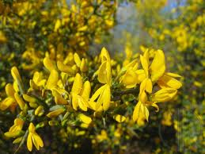

Genêt à balai

Genêt à balai (Sarothamnus scoparius de la famille des Fabacées)
Peu toxique.
Partie toxique pour les chats en général et le Korat en particulier :
Toute la plante.
Symptômes du processus pathologique :
Vomissements, diarrhée, constipation, Paralysies, Tachycardie, accélération du cœur : fréquence cardiaque au-dessus de 100 pulsations par minute, Inconscience, excitation.
Origine de la toxicité (principe actif) :
La spartéine (qui intervient dans les troubles du rythme cardiaque) et la cytisine (symptômes nerveux), une amine aromatique (vasoconstrictrice) et des flavonoïdes diurétiques.